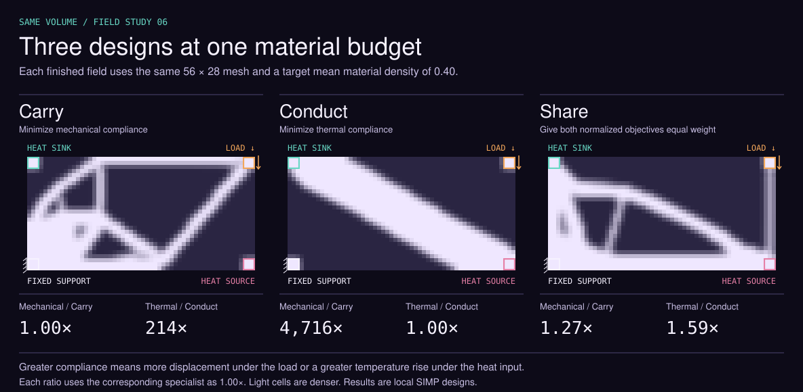

Forming field
The field could not be formed in this browser.
The volume exhibit needs a canvas and a worker for the SIMP solve.Same target budget. Different obligations.
Compare the finished designs ↓In the primary exhibit, one rectangular domain has 56 by 28 Q4 elements and a target mean physical density of 0.40 across the mesh, including four forced-solid patches; individual cells vary in density. Same supports, load, heat source, and heat sink in every claim. Density-filtered SIMP, penalty 3, filter radius 1.8 element lengths. Carry minimizes mechanical compliance. Conduct minimizes thermal compliance. Share is the frozen scalarization one-half mechanical over Carry reference plus one-half thermal over Conduct reference. Its displayed mechanical compliance contribution and thermal dissipation overlays are normalized independently within the current field. No thermal strain. These are local SIMP results, not certified optima. Two-dimensional linear elasticity and steady conduction. Not a manufacturable part. Forced-solid patches are physical density 1 after the filter, in both operators and in V. Field transitions between finished designs morph density only; they are not solved states.
Each design spends the same 40% target on a different task. Follow the material between the four marked corners.
Each ratio uses its specialist as 1.00×. Higher mechanical compliance means more movement under the load. Higher thermal compliance means a greater temperature rise under the same heat input.
Open full-size figure ↗The large field shows where each design spends its material. First trace the darker voids and the denser bands between the marked supports, load, source, and sink. Then inspect one cell to see what the solver measures there.
